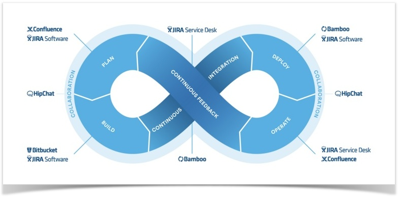

Controle de Versão

Controle de versão é um sistema que tem por finalidade gerenciar versões diferentes de um arquivo, permitindo assim uma melhor organização de projetos, esse sistema permite ao usuário total controle do histórico de desenvolvimento e ainda uma série de utilidades como: modificar uma versão, incluir novas funcionalidades, recuperar projetos em estados anteriores e tudo isso sem alterar nada em seu projeto principal, pois todas as modificações do projeto ficam armazenadas caso seja necessário recuperar uma versão anterior.
Gerenciamento de Mudanças
Gerenciamento de mudanças é sempre necessário em um projeto, pois é esse processo de gerenciamento que controla todas as mudanças que ocorrem no mesmo. Ele auxilia a decidir se essas mudanças são realmente necessárias e qual as suas utilidades, por isso é muito útil e deve ser aplicado durante todo o projeto. Com o gerenciamento de mudanças é possível monitorar todos os processos ocorridos e ainda controlar todas as alterações contidas nele, tornado assim seu desenvolvimento mais seguro.
Integração Contínua

Integração contínua é uma técnica de desenvolvimento muito eficaz, onde vários indivíduos trabalham diariamente fazendo integrações, podem ser feitas várias em apenas um dia. Essas integrações são verificadas e nelas são realizados testes com o objetivo de se possivelmente haver erro em alguma seja o mais rápido possível solucionado, tornado assim o desenvolvimento do projeto mais rápido e integro.